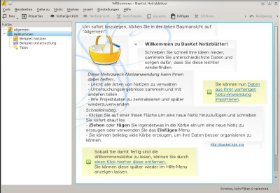

Basket
Dieser Artikel wurde für die folgenden Ubuntu-Versionen getestet:
Ubuntu 16.04 Xenial Xerus
Ubuntu 14.04 Trusty Tahr
Zum Verständnis dieses Artikels sind folgende Seiten hilfreich:
 BasKet Note Pads
BasKet Note Pads  ist ein KDE-Programm, das Notizen, Links, Bilder und weitere Informationen sammelt und strukturiert. Themengebiete werden hier Korb genannt, da ähnlich wie in einen echten Korb "Dinge einfach hineingeworfen" werden können. BasKet eignet sich gut dafür Informationen zusammenzutragen, z.B. To-Do Listen, Einkaufszettel, Vorbereitung von Vorträgen, Organisation von Programmcode und vielem mehr.
ist ein KDE-Programm, das Notizen, Links, Bilder und weitere Informationen sammelt und strukturiert. Themengebiete werden hier Korb genannt, da ähnlich wie in einen echten Korb "Dinge einfach hineingeworfen" werden können. BasKet eignet sich gut dafür Informationen zusammenzutragen, z.B. To-Do Listen, Einkaufszettel, Vorbereitung von Vorträgen, Organisation von Programmcode und vielem mehr.
|  |
| BasKet |
Funktionen¶
Kategorisierung/Hervorheben des Textes
Vorgefertigte Strukturierungselemente (z.B. To-Do Listen)
Perfekte Integration in KDE (Mail, Kontakte, Browser)
Aktionen rückgängig machen/wiederholen
Anpassen der Schriftart, -farbe und -größe
Sperren von Körben (mittels Passwort)
Listendarstellung, Einbinden von Bildern
Export der Notiz in HTML
Druckfunktion
Installation¶
Zur Installation [1] ist folgendes Paket notwendig:
basket (universe)
 mit apturl
mit apturl
Paketliste zum Kopieren:
sudo apt-get install basket
sudo aptitude install basket
Anschließend kann über das Menü über "Büroprogramme -> BasKet Notizblätter" gestartet werden [2]. Außerdem ist es nach dem Start als Applet in der Kontrollleiste zu finden.
Bedienung¶
Körbe erstellen¶
Um Notizen zu schreiben, ist es nötig, vorher einen Korb zu eröffnen. Damit werden Einträge einem bestimmten Themengebiet zugeordnet. Dazu klickt man in die Menüleiste "Korb" und wählt dort "Neu" aus. Diesem wird ein passender Name gegeben und erscheint nun in der linken Spalte des Programms. Außerdem ist es möglich, weitere Unterkörbe zu erstellen.
Einfügen von Inhalten¶
Informationen können durch folgende Möglichkeiten eingefügt werden:
Klicken in den freien Bereich (Rechtsklick bietet noch mehr Möglichkeiten)
Drag & Drop
Einfügen-Menü in der Menüleiste
Außerdem können die verschiedenen Elemente eines Korbes beliebig mit der Maus (auch in andere Körbe) verschoben werden.
Filter¶
Über die Zeile "Filter" können Informationen innerhalb eines Korbes gesucht werden. Außerdem ist es über das Dropdown-Menü möglich, nach bestimmten Strukturierungselementen zu suchen.

- Erstellt mit Inyoka
-
 2004 – 2017 ubuntuusers.de • Einige Rechte vorbehalten
2004 – 2017 ubuntuusers.de • Einige Rechte vorbehalten
Lizenz • Kontakt • Datenschutz • Impressum • Serverstatus -
Serverhousing gespendet von